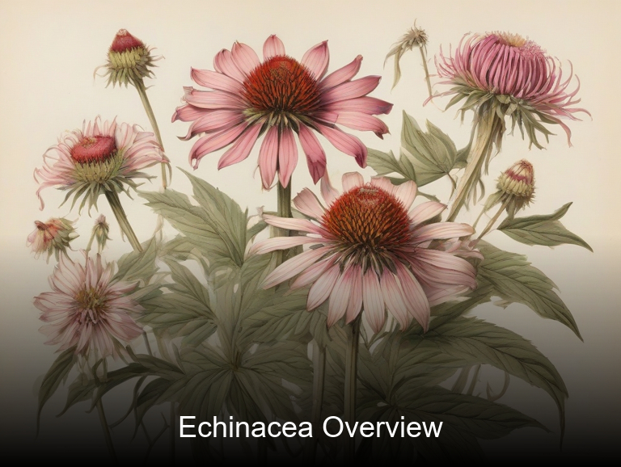
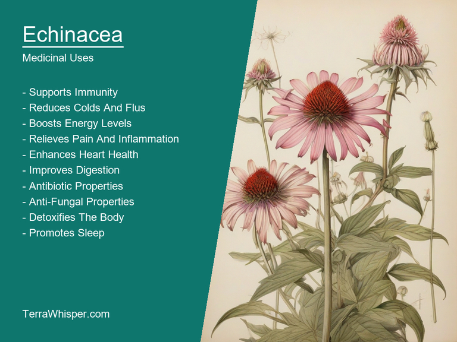
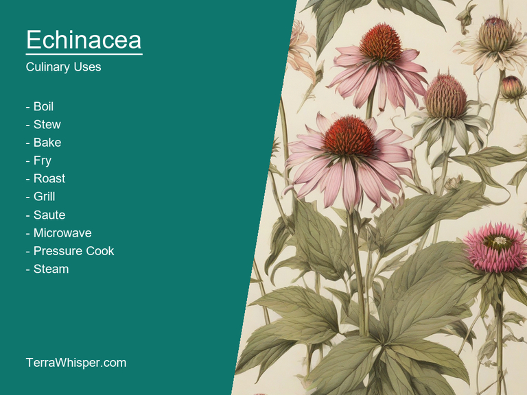
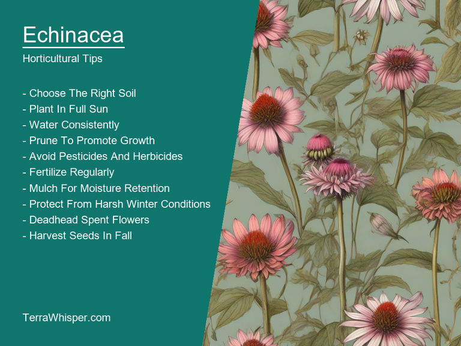
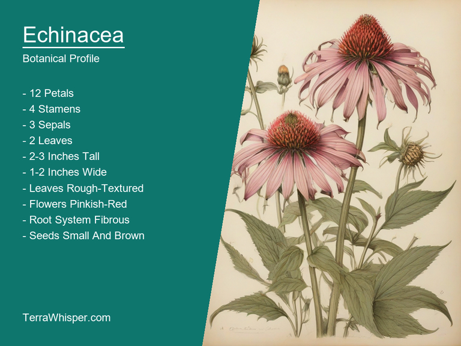
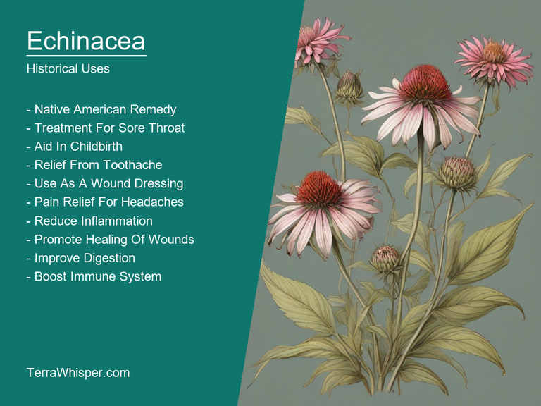

Echinacea, scientifically known as Echinacea angustifolia, is a unique flowering plant with medicinal and culinary value alongside impressive horticultural and ornamental characteristics. As an essential herb in traditional medicine for thousands of years, it has been used to treat various health issues, such as colds, flu symptoms, and minor skin problems. With the abundance of essential vitamins and minerals, Echinacea is also utilized as a key ingredient in many culinary preparations.
Apart from its medicinal uses, Echinacea angustifolia's horticultural qualities make it an excellent choice for gardeners seeking attractive additions to their landscapes and cultivars to beautify indoor spaces through stunningly unique flower arrangements. The plant thrives in well-drained soil with plenty of sunlight exposure, making it suitable for a variety of growing conditions. As an ornamental flowering perennial, Echinacea angustifolia boasts vibrant blooms and impressive height, adding an element of charm to the gardens that host them.
Botanically speaking, Echinacea belongs to the sunflower family, Asteraceae, which boasts diverse floral structures that make it easily recognizable. The plant's genus name 'Echinacea' is derived from the Greek word 'echinus', meaning sea urchin, referring to the cone-like center of its flowers. Echinacea angustifolia, or coneflower as it's commonly known, has a rich history dating back centuries with Native American tribes using it for its therapeutic qualities and medicinal purposes. The plant was subsequently incorporated into traditional Western medicine systems to treat various health issues, making it a significant component of modern-day natural remedies.
In this article, you will discover what are the medicinal and culinary uses of echinacea. Then, you'll learn how to cultivate it, what is its botanical profile, and how it was used historically.
Echinacea (Echinacea angustifolia) has many health benefits, such as its ability to alleviate symptoms of colds and flu, boosting immunity, fighting against bacterial infections, treating wounds, reducing inflammation, and easing skin conditions. It is a popular herbal remedy for various health issues due to its potent medicinal constituents that include polyphenols, alkamides, flavonoids, essential oils, and other compounds that aid our body's fight against germs and infections.
The following illustration lists the most important uses of echinacea in medicine.

The most active part of Echinacea plants are their flowers, roots, leaves, and sometimes even the stems. They are often used to prepare various medicinal preparations such as teas, tinctures, extracts, and dried powders. These preparations can be consumed in different forms like capsules, tablets, or liquid drops for convenient administration and quick relief.
Although Echinacea is generally safe for most people, it may cause some side effects due to its immune-boosting properties. Some individuals might experience allergic reactions, skin irritation, nausea, vomiting, dizziness, or upset stomach. It can also interfere with certain medications like immunosuppressants, steroids, and blood thinners.
Consult your healthcare professional before incorporating any new herbal remedy into your routine, especially if you have an underlying health condition or take medication for that issue. Avoid using Echinacea during pregnancy and breastfeeding unless prescribed by a qualified practitioner. Additionally, keep the dosage as recommended to prevent excessive effects of immune enhancement.
Echinacea (Echinacea angustifolia) is a versatile plant that has found its way into various culinary applications, such as using its roots in making teas and infusions, or incorporating its flowers in salads, jellies, and even sauces. The plant's unique taste adds depth to dishes while offering health benefits from its natural components.
The following illustration lists the most common uses of echinacea for culinary purposes.

The flavor profile of Echinacea is a delicate mix of earthy, slightly bitter, and mildly sweet notes that contribute complexity to culinary creations. The bitterness balances the sweetness, making it an excellent ingredient for pairing with more robust flavors like spices or dark chocolate in dishes.
The edible parts of Echinacea primarily consist of its roots and flowers. These offer contrasting tastes, with the roots imparting a stronger earthy flavor while the flowers provide a milder sweetness. Both can be used to enhance any meal with their unique characteristics and subtle yet distinctive flavors.
To incorporate Echinacea into your culinary creations, consider using it as a spice for soups or stews. You can also use it for herbal garnishes on salads or as an ingredient in homemade ice cream or granola to add depth and complexity. For beverages, the roots make excellent tea infusions, while the flowers are often incorporated into cordials and syrups, allowing them to be used in various drinks like cocktails or mocktails.
While Echinacea has gained popularity for its culinary uses and perceived health benefits, it's essential to be aware of possible side effects that could result from overuse, which might include digestive issues, allergic reactions, and even liver damage in some cases. As with any new ingredient, it's best to consume Echinacea in moderation and consult a healthcare professional before incorporating it into your regular diet.
Echinacea angustifolia, commonly known as cone flower or narrow-leaved purple coneflower, is a beautiful and resilient member of the daisy family. It is not only easy to grow but also provides numerous health benefits for both humans and wildlife due to its antiviral, antibacterial properties and immune system boosting qualities.
The following illustration lists the most important tips to cutlitvate echinacea.

Growing this plant begins with selecting a suitable location. Choose an area that receives full sunlight throughout most of the day or at least six hours daily. It is essential to prepare well-drained soil with a pH between neutral and slightly alkaline, ranging from 6.0 to 7.5 on the scale. Dig a hole twice as deep as the plant's root ball, incorporating organic matter like compost or manure for better growth. Space the plants around 30-45cm apart to allow room for their growth and prevent overcrowding.
The ideal growing conditions entail providing adequate water during the initial establishment period. Echinacea angustifolia thrives in areas with moderate moisture levels, so water the plants regularly but not excessively, ensuring the soil is evenly moist. After establishing the root system, reduce watering to once or twice a week, depending on weather conditions and plant needs.
To maintain healthy growth, fertilization may be required for optimum results. Apply a balanced organic fertilizer in spring when new leaves emerge or in early summer after flowering starts, following label instructions for appropriate quantities per area. Regularly deadhead the spent flowers to encourage additional blooms and promote longer-lasting performance.
To maintain a thriving echinacea angustifolia garden, we must protect them from potential pests such as aphids or leafminers, which can cause damage to foliage. Monitor plants closely and apply insecticidal soap if necessary. Additionally, watch out for signs of powdery mildew, a fungal disease that may appear on the leaves and flowers, and treat accordingly with appropriate fungicides to safeguard plant health.
Echinacea, with botanical name Echinacea angustifolia, belongs to the domain Eukaryota, kingdom Plantae (also called the Plant Kingdom), phylum Magnoliophyta (flowering plants), class Magnoliopsida (dicotyledons or hard-seeded flowering plants), order Asterales, family Asteraceae, and genus Echinacea. Common names for this plant include Purple Coneflower, Kansas Snake Root, American Coneflower, and Yellow Coneflower depending on its appearance.
The following illustration display the botanical profile of echinacea.

There are several variants of Echinacea angustifolia, including E. angustifolia var. angustifolia (the common species), E. angustifolia var. pallida (pale-leaved form), and E. angustifolia var. purpurea (with reddish leaves). These variants can be distinguished by their leaf color, size, shape, or other morphological features.
The plant is native to the eastern and central regions of North America and primarily grows in grasslands, prairies, open woodlands, and other areas with well-drained soil. It thrives best in full sun conditions with mild drought tolerance. Echinacea angustifolia has a distinctive appearance characterized by its large, cone-shaped flower heads with prominent central cones and ray florets that can be either purple or yellow depending on the variant.
The life cycle of Echinacea angustifolia is typical for perennial plants as they exhibit both vegetative and reproductive growth phases. During their growing season, the plants flourish producing flowers which give rise to seeds upon fertilization. These seeds are often spread through various dispersal mechanisms such as wind, water, or animal activities like seed-eating birds or mammals. Echinacea can be propagated either by seeding or through division of its rootstock.
The historical aspects of Echinacea (Echinacea angustifolia) are deeply rooted in traditional medicine, uses for divination, and legends surrounding the plant. As a vital part of native American herbal remedies, Echinacea has been used to treat various illnesses including respiratory problems, wounds, and digestive issues. Traditionally regarded as a potent healer, it was believed that the plant could cure everything from snakebites to insect stings. In some tribes, a powdered form of the plant was applied directly to skin irritations or wounds for quick healing.
The following illustration lists the most well known historical uses of echinacea.

On a broader scale, Echinacea has been utilized in various practices, particularly as part of divination rituals. Divination is an ancient practice whereby practitioners attempt to predict future events by using objects like bones, stones, and plants. In this context, Echinacea was regarded not just for its healing properties but also as a way of revealing hidden knowledge or guidance during sacred rituals. The plant's cone-shaped seed head resembled the image of an eye, which further reinforced its divinatory use as it symbolized wisdom and insight.
Echinacea is steeped in Native American legends that explain its origin and significance. According to one such legend, a young girl named White Deer was gifted with healing powers by the Great Spirit. As she used her gifts to help her tribe heal from illnesses and injuries, she became known as "Echinacea," which means "showy spiny plant" in reference to its unique appearance. The story emphasizes the importance of Echinacea in maintaining balance and harmony within the community while illustrating its role as a symbol of healing and wisdom.